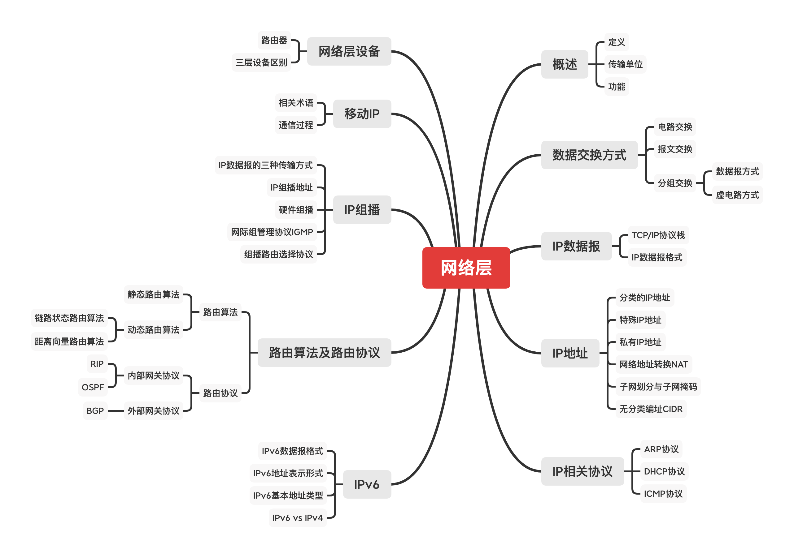
1 概述
网络层的主要任务是把分组（数据报切割）从源端传送到目的端，为分组交换网上的不同主机提供通信服务。
网络层的传输单位是数据报。
网络层的功能：
- 路由选择与转发。
- 异构网络互联。
- 拥塞控制
2 数据交换方式
2.1 电路交换
e.g.：电话网络
电路交换过程：
- 建立连接（呼叫/电路建立）
- 通信
- 释放电路（拆除电路
特点：独占资源
优点：
- 通信时延小
- 有序传输
- 没有冲突
- 实时性强
缺点：
- 建立连接时间长
- 线路独占，使用效率低
- 灵活性差
- 无差错控制能力
2.2 报文交换
报文：源媒体发送的信息整体。
优点：
- 无需建立连接
- 存储转发，动态分配线路
- 线路可靠性较高
- 线路利用率较高
- 多目标服务
缺点：
- 有存储转发时延
- 报文大小不定，需要网络节点有较大缓存空间
2.3 分组交换
分组：把大的数据块（报文）分割成小的数据块。
优点：
- 无需建立连接
- 存储转发，动态分配线路
- 线路可靠性较高
- 线路利用率较高
- 相对于报文交换，存储管理更容易
缺点：
- 有存储转发时延
- 需要传输额外的信息量
- 乱序到目的主机时，要对分组排序重组
报文交换 vs 分组交换
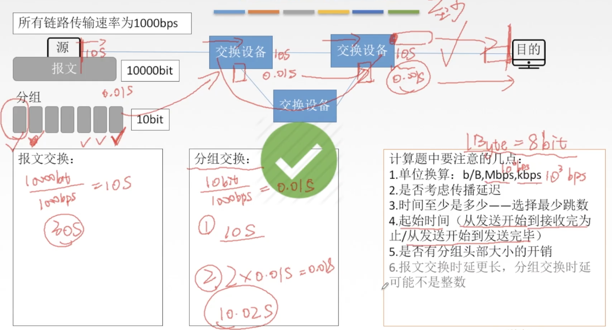
三种交换方式比较：
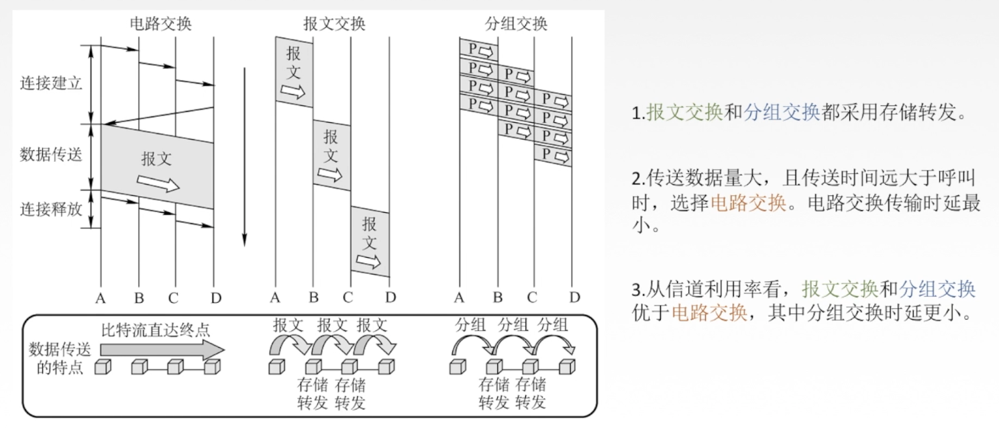
2.4 数据报方式和虚电路方式
分组交换又分为数据报方式和虚电路方式。
数据报方式为网络层提供无连接服务：不事先为分组的传输确定传输路径，每个分组独立确定传输路径，不同分组传输路径可能不同。
虚电路方式为网络层提供连接服务：首先为分组的传输确定传输路径（建立连接），然后沿该路径（连接）传输系列分组，系列分组传输路径相同，传输结束后拆除连接。
数据报：因特网使用的方式
- 无连接：不事先为分组的传输确定传输路径，每个分组独立确定传输路径，不同分组传输路径可能不同。
- 每个分组携带源和目的地址
- 路由器根据分组的目的地址转发分组：基于路由协议/算法构建转发表；检索转发表；每个分组独立选路。
虚电路：一条源主机到目的主机类似于电路的路径（逻辑连接），路径上所有结点都要维持这条虚电路的建立，都维持一张虚电路表，每一项记录了一个打开的虚电路信息。
- 结合数据报方式和电路交换方式，发挥两者优点
- 通信过程：
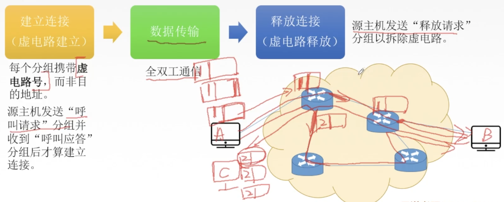
数据报服务 vs 虚电路服务：
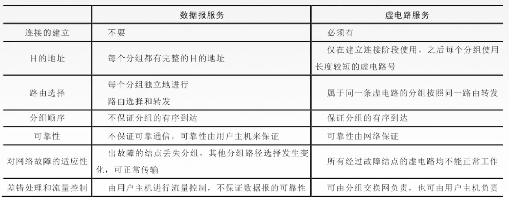
3 IP数据报
TCP/IP协议栈：
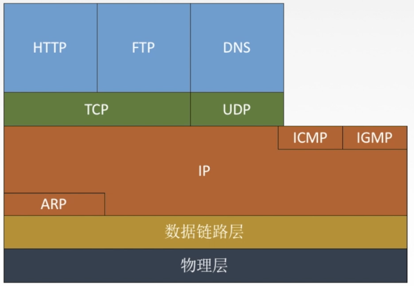
IP数据报格式：
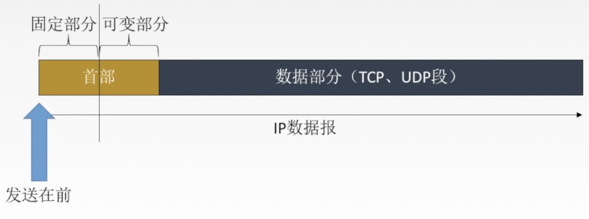
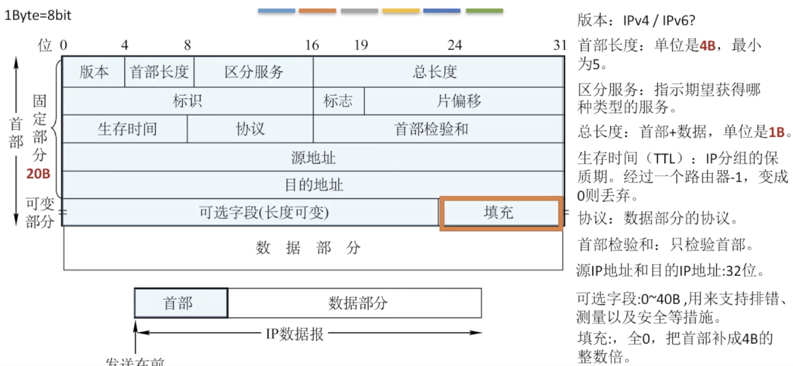
最大传送单元MTU：链路层数据帧可封装数据的上限。（以太网MTU是1500B）
如果所传送数据报长度超过MTU？——分片。
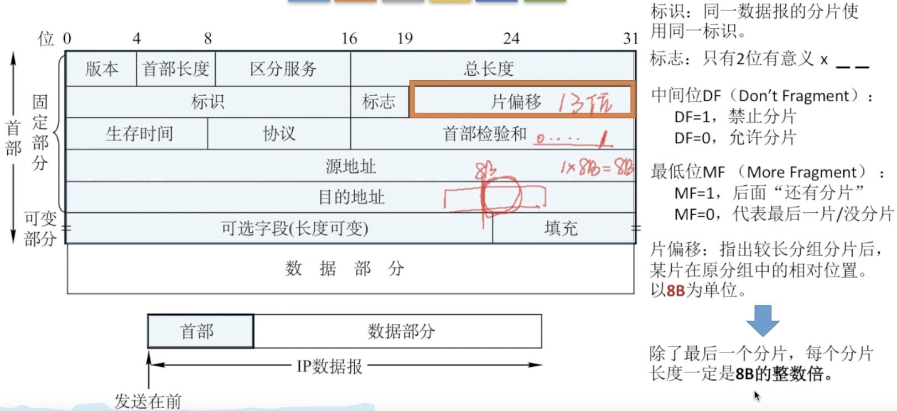
4 IP地址
4.1 分类的IP地址
IP编制的历史阶段：
- 分类的IP地址
- 子网的划分
- 构成超网（无分类编址方法）
IP地址：全世界唯一的32位/4字节标识符，标识主机或路由器的接口。
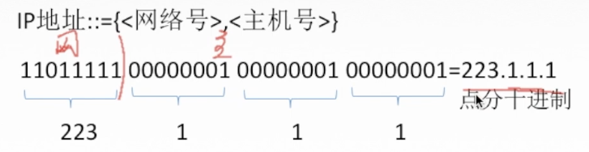
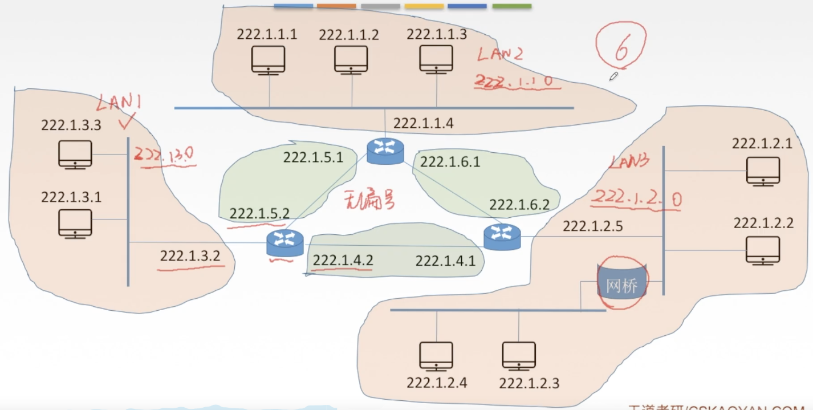
分类的IP地址：
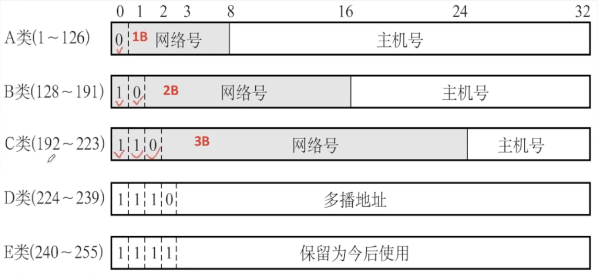
特殊的IP地址：在IP地址中有一些并不是来标注主机的，这些地址具有特殊的意义。这些地址包括网络地址、直接广播地址、受限广播地址、本网络地址、环回地址等。
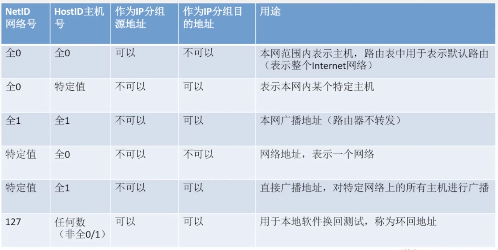
第二行勘误：可作为源地址，不可作为目的地址。
私有IP地址：公网IP是在Internet使用的IP地址，而私有IP地址则是在局域网中使用的IP地址，即在A、B、C三类IP地址中保留下来为企业内部网络分配地址时所使用的IP地址。
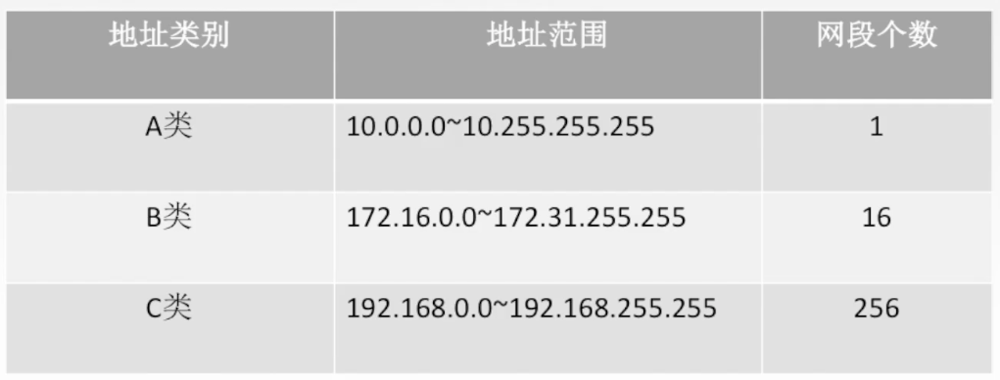
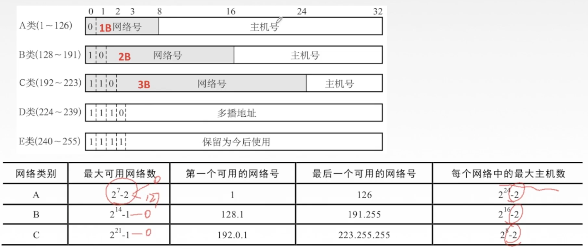
4.2 网络地址转换NAT
路由器对于目的地址是私有IP地址的数据报一律不进行转换。
网络地址转换NAT（Network Address Translation）：在专用网连接到因特网的路由器上安装NAT软件，安装了NAT软件的路由器叫NAT路由器，它至少有一个有效的外部全球IP地址。
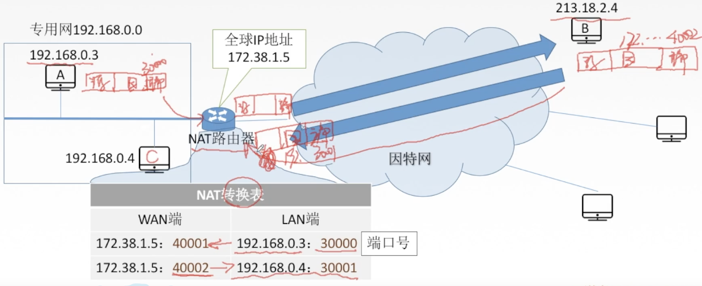
4.3 子网划分与子网掩码
分类的IP地址的弱点：
- IP地址空间的利用率有时很低。（网络号太少，主机号太多，但是没那么多主机，无法有效利用）
- 两级IP地址不够灵活。（已经拥有一个IP地址，要申请新的IP地址，需要再次请求ISP）
子网划分：借用IP地址的若干位主机位来充当子网地址从而将原网络划分为若干子网。
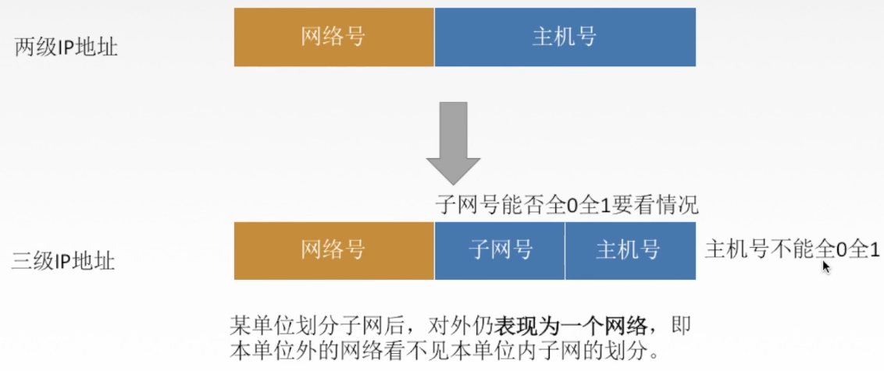
子网掩码：网络位全1，主机位全0。子网掩码(subnet mask)是一种用来指明一个IP地址的哪些位标识的是主机所在的子网，以及哪些位标识的是主机的位掩码。子网掩码不能单独存在，它必须结合IP地址一起使用。子网掩码只有一个作用，就是将某个IP地址划分成网络地址和主机地址两部分。
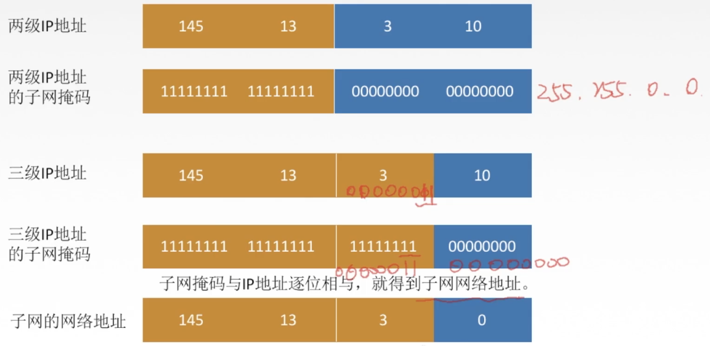
使用子网时分组的转发：
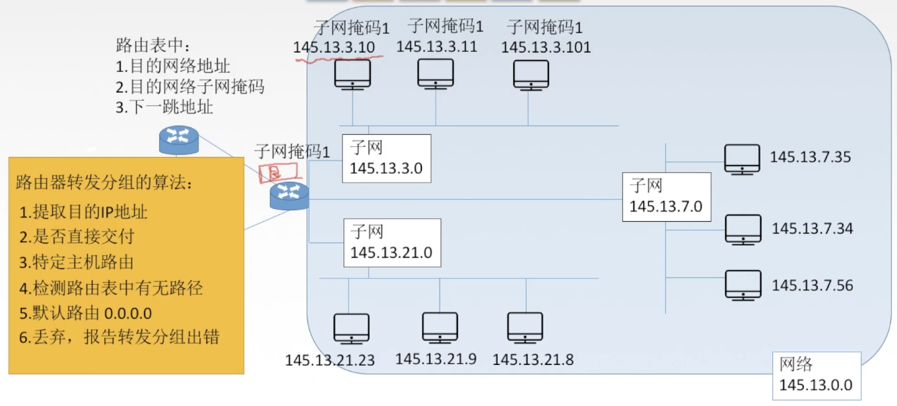
4.4 无分类编址CIDR
无分类域间路由选择CIDR：
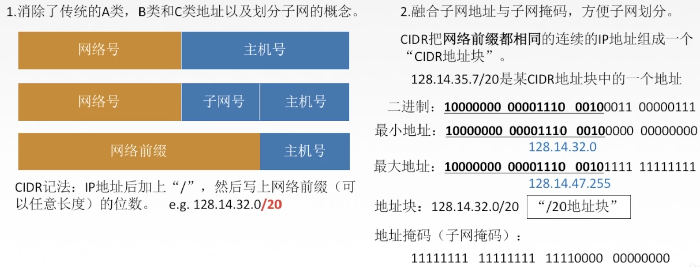
构成超网：或称为路由聚合，将多个子网聚合成一个较大的子网。
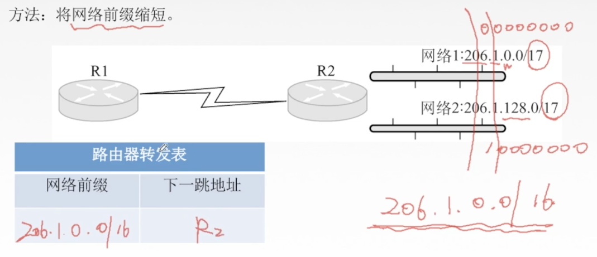
最长前缀匹配：使用CIDR时，查找路由表可能得到几个匹配结果，应选择具有最长网络前缀的路由。前缀越长，地址快越小，路由越具体。
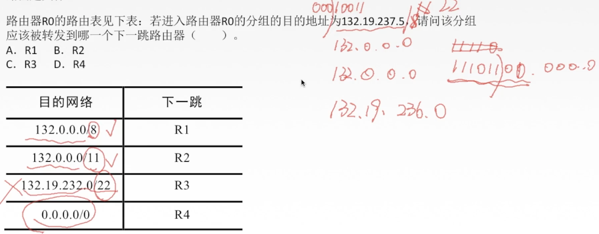
5 IP相关协议
5.1 ARP协议
发送数据的过程：
- 1发送3:
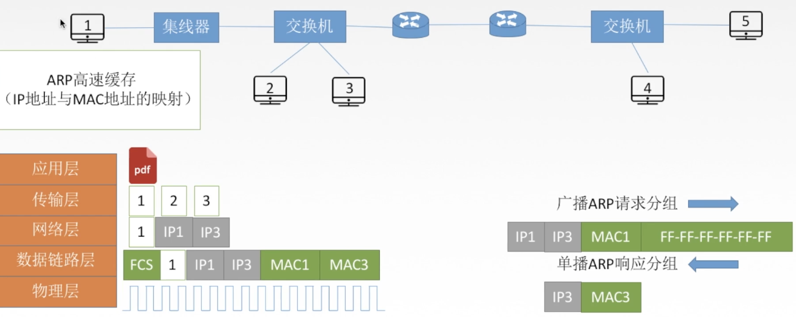
- 1发送5:
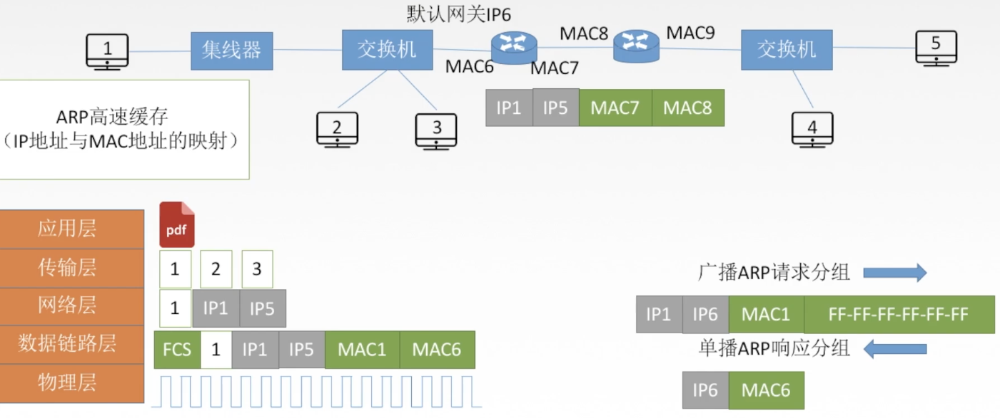
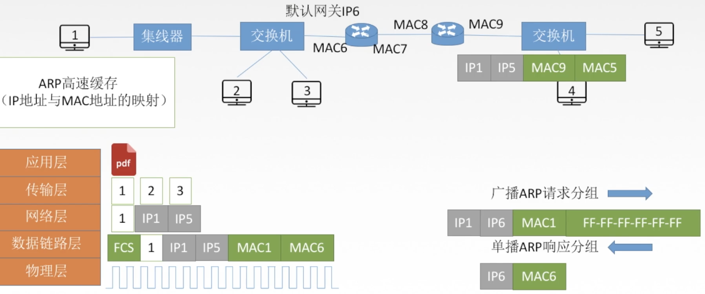
ARP协议：
- 原因：由于在实际网络的链路上传送数据帧时，最终必须使用MAC地址。
- 任务：完成主机或路由器IP地址到MAC地址的映射（下一跳走哪里）。
- 过程：检查ARP高速缓存，有对应表项则写入MAC帧，没有则用目的MAC地址为全F的帧封装并广播ARP请求分组，同一局域网中所有主机都能收到该请求。目睹主机收到请求后就会向源主机单播一个ARP响应分组，源主机收到后将此映射写入ARP缓存（10-20min更新一次）。
- 4种典型情况：
- 主机A发给本网络上的主机B：用ARP找到主机B的MAC地址。
- 主机A发给另一网络的主机B：用ARP找到本网络上一个路由器（网关）的MAC地址。
- 路由器发给本网络的主机A：用ARP找到主机A的MAC地址。
- 路由器发给另一网络的主机B：用ARP找到本网络上的一个路由器的硬件地址。
- ARP协议是自动进行的。
5.2 DHCP协议
主机如何获得IP地址：
- 静态配置：IP地址，子网掩码，默认网关（通常是一个路由器的一个端口的IP地址）。
- 动态配置：
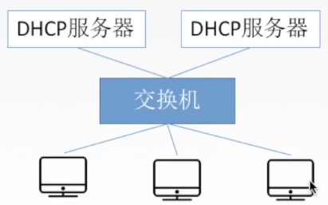
DHCP协议：动态主机配置协议DHCP是应用层的协议，使用客户/服务器模式，客户端和服务端通过广播方式进行交互，基于UDP。
DHCP提供即插即用联网机制，主机可以从服务器动态获取IP地址、子网掩码、默认网关、DNS服务器名称与IP地址。
DHCP允许地址重用，支持移动用户加入网络，支持在用地址续租。
过程：
- 主机广播DHCP发现报文：有没有DHCP服务器？试图找到网络中的服务器，服务器获得一个IP地址。
- DHCP服务器广播DHCP提供报文：有有有。服务器拟分配一个IP地址及相关配置，先到先得。
- 主机广播DHCP请求报文：我用你给的IP地址？主机向服务器请求提供IP地址。广播是为了告诉其他服务器收回IP地址。
- DHCP服务器广播DHCP确认报文：用吧！正式将IP地址分配给主机。
5.3 ICMP协议
网际控制报文协议ICMP：网络层协议，支持主机或路由器。
- 差错（或异常）报告 —— 发送特定ICMP报文。
- 网络探询。
ICMP报文结构：ICMP报文封装在IP数据报的数据部分。
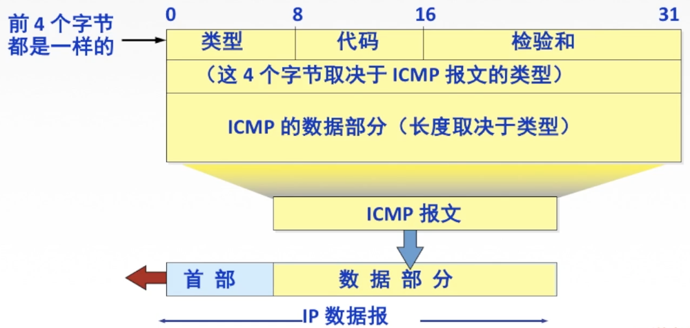
ICMP报文类型：
- 差错报告报文
- 询问报文
ICMP差错报告报文（5种类型）：
- 终点不可达：无法交付。路由器或主机不能交付数据报时就向源点发送终点不可达报文。
- 源点抑制（不再使用）：拥塞丢数据。路由器或主机由于拥塞而丢弃数据报时，向源点发送源点抑制报文，使源点知道应当把数据报的发送速率放慢。
- 时间超过。TTL=0。当路由器收到生存时间TTL=0的数据报时，丢弃该数据报，同时向源点发送时间超过报文。当终点在预先规定时间内不能收到一个数据报的全部报片时，把已收到的数据报片都丢弃，向源点发送时间超过报文。
- 参数问题：首部字段有问题。当路由器或目的主机收到的数据报的首部中有的字段的值不正确，就丢弃该数据报，并向源点发送参数问题报文。
- 改变路由（重定向）：值得更好的路由。路由器把改变路由报文发送给主机，让主机直到下次应该将数据报发送给另外的路由器（可通过更好的路由）。
ICMP差错报告报文数据字段：
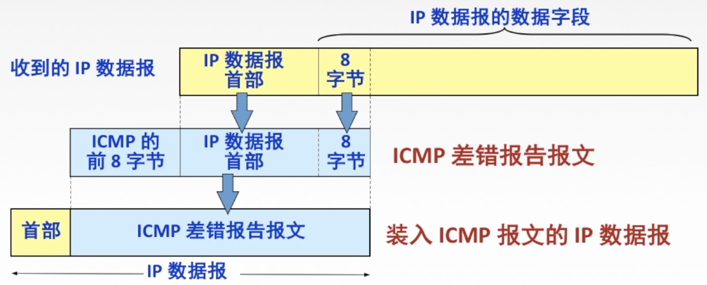
不发送ICMP差错报文的情况：
- 对ICMP差错报告报文不再发送ICMP差错报告报文。
- 对第一个分片的数据报片的所有后续数据报片都不发送ICMP差错报告报文。
- 对具有组播地址的数据报都不发送ICMP差错报告报文。
- 对具有特殊地址（127.0.0.0或0.0.0.0）的数据不发送ICMP差错报告报文。
ICMP询问报文（4种类型）：
- 回送请求和回答报文：测试目的站是否可达及了解相关状态。主机或路由器向特定目的主机发出的询问（ping），收到此报文的主机必须给源主机或路由器发送ICMP回送回答报文。
- 时间戳请求和回答报文：用来进行时钟同步和测量时间。请某个主机或路由器回答当前的日期和时间。
- 掩码地址请求和回答报文（不再使用）
- 路由器询问和通告报文（不再使用）
ICMP的具体应用：
- ping：测试两个主机之间的连通性，使用ICMP回送请求和回答报文。
- traceroute：跟踪一个分组从源点到终点的路径，使用ICMP时间超过差错报告报文。
6 IPv6
原因：32位IPv4地址空间分配殆尽…，改进首部格式，实现快速处理/转发数据报，支持QoS。
IPv6数据报格式：
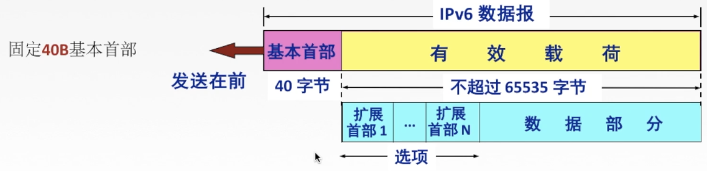
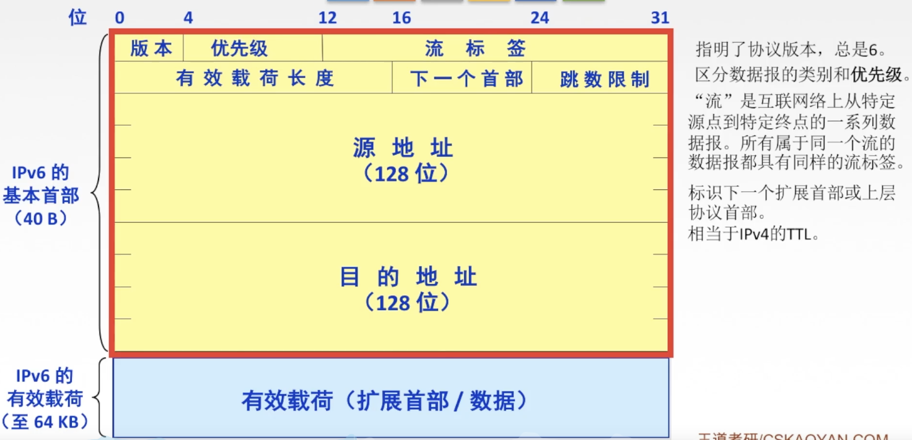
IPv6 vs IPv4：
- IPv6将地址32位扩大到128位，更大的地址空间。
- IPv6将IPv4的检验和字段彻底移除，以减少每跳的处理时间。
- IPv6将IPv4的可选字段移出首部，变成了扩展首部，成为灵活的首部格式，路由器通常不对扩展首部进行检查，大大提高了路由器的处理效率。
- IPv6支持即插即用（自动配置），不需要DHCP协议。
- IPv6首部长度必须是8B的整数倍，IPv4首部是4B的整数倍。
- IPv6只能在主机处分片，IPv4可以在路由器和主机分片。
- ICMPv6：附加报文类型“分组过大”。
- IPv6支持资源的预分配，支持实时视像等要求，保证一定的带宽和时延的应用。
- IPv6取消了协议字段，改成下一个首部字段。
- IPv6取消了总长度字段，改用有效载荷长度字段。
- IPv6取消了服务类型字段。
IPv6地址表示形式：
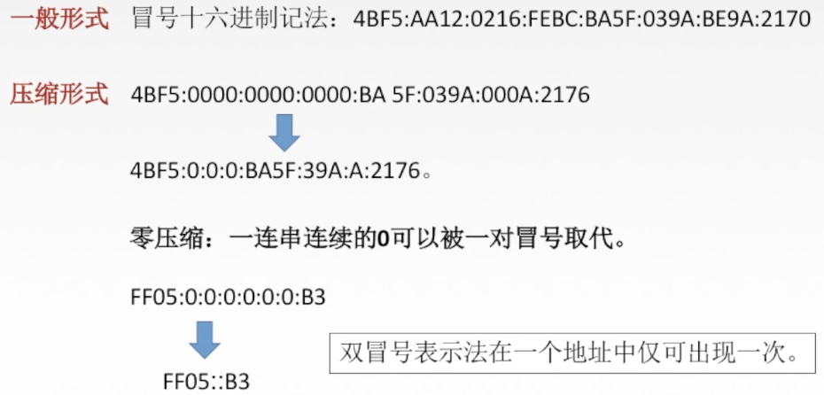
IPv6基本地址类型：
- 单播地址：一对一通信，可做源地址或目的地址。
- 多播地址：一对多通信，可做目的地址。
- 任播地址：一对多中的一个通信（通常是距离最近的一个），可做目的地址。
IPv6向IPv4过渡的策略：
- 双栈协议：在一个设备上同时启用IPv4协议栈和IPv6协议栈。
- 隧道技术：使用隧道传递的数据可以是不同协议的数据帧或包，隧道协议将其他协议的数据帧或包重新封装然后通过隧道发送。
7 路由算法及路由协议
路由算法：
- 静态路由算法（非自适应路由算法）：管理员手工配置路由信息
- 优点：简单、可靠，在符合稳定、拓扑变化不大的网络中运行效果很好，广泛用于高度安全性的军事网络和较小的商业网络。
- 缺点：路由更新慢，不适用于大型网络。
- 动态路由算法（自适应路由算法）：路由器间彼此交换信息，按照路由算法优化出路由表项。
- 优点：路由更新快，适用于大型网络，及时响应链路费用或网络拓扑变化。
- 缺点：算法复杂，增加网络负担。
动态路由算法：
- 全局性：链路状态路由算法OSPF，所有路由器掌握完整的网络拓扑和链路费用信息。
- 分散性：距离向量路由算法RIP，路由器只掌握物理相连的邻居及链路费用。
分层次的路由选择协议：
- 原因：
- 因特网规模大。
- 许多单位不想让外界知道自己的路由选择协议，但还想连入因特网。
- 自治系统AS：
- 在单一的技术管理下的一组路由器，而这些路由器使用一种AS内部的路由选择协议和共同的度量以确定分组在该AS内的路由，同时还是用一种AS之间的路由协议以确定AS之间的路由。
- 一个AS内的所有网络都属于一个行政单位来管辖，一个自治系统的所有路由器在本自治系统内都必须连通。
路由选择协议：
- 内部网关协议IGP：一个AS内使用。RIP，OSPF
- 外部网关协议BGP：AS之间使用。BGP
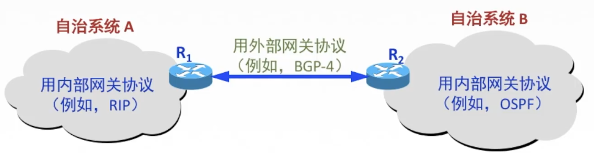
7.1 RIP协议及距离向量算法
RIP协议是一种分布式的基于距离向量的路由选择协议，是因特网的协议标准，最大优点是简单，但只适用于小互联网。
RIP协议要求网络中每一个路由器维护从它自己到其他每一个目的网络的唯一最佳距离记录（即一组距离）。
距离：“跳数”，即从源端口到目的端口所经过的路由器个数，经过一个路由器跳数+1。特别的，从一个路由器直接连接的网络距离为1。RIP允许一条路由最多包含15个路由器，因此距离为16表示网络不可达。
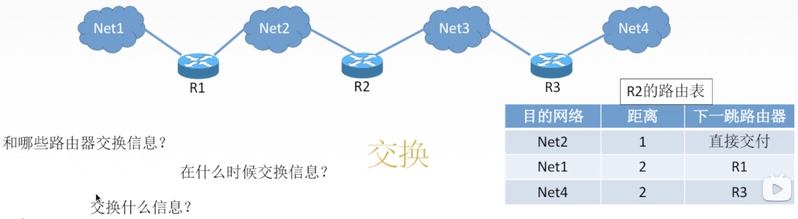
RIP协议和谁交换，多久交换一次，交换什么？
- 仅和相邻路由器交换信息。
- 路由器交换的信息是自己的路由表。
- 每30秒交换一次路由信息，然后路由器根据新信息更新路由表，如果超过180s没收到邻居路由器的通告，则判定邻居没了，并更新自己的路由表。
路由器刚开始工作时，只知道直接连接网络的距离（距离为1），接着每一个路由器也只和数目有限的相邻路由器交换并更新路由信息。
经过若干次更新后，所有路由器最终都会知道到达本自治系统任何一个网络的最短距离和下一跳路由器地址，即“收敛”。
距离向量算法：
- 修改相邻路由器发来的RIP报文中的所有表项：
- 对地址为X的相邻路由器发来的RIP报文，修改此报文中的所有项目：把下一跳字段中的地址改为X，并把所有距离字段+1。
- 对修改后的RIP报文中的每一个项目，进行以下步骤：
- R1路由表中若没有Net3，则把该项目填入R1路由表
- R1路由表中若有Net3，则查看下一跳路由器地址：
- 若下一跳是X，则用收到的项目替换原路由表中的项目。
- 若下一跳不是X，原来距离比从X走的距离更远则更新，否则不作处理。
- 若180s还没收到相邻路由器X的更新路由表，则把X记为不可达路由器，把距离设置为16。
- 返回。
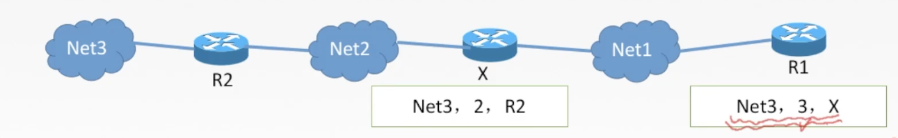
RIP协议的报文格式：
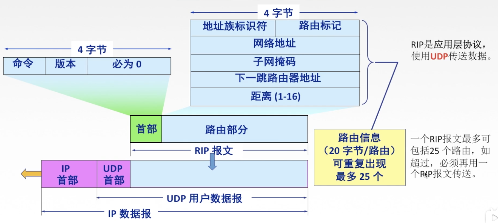
RIP协议的特点：好消息传得快，坏消息传得慢。当网络出现故障时，要经过比较长的时间（比如数分钟）才能将此消息传给所有路由器，“慢收敛”。
7.2 OSPF协议及链路状态算法
开放最短路径优先OSPF协议：“开放”表明OSPF协议不是受某一厂商控制，而是公开发表的；“最短路径优先”是因为使用了Dijkstra提出的最短路径算法SPF。
OSPF最主要的特征就是使用分布式的链路状态协议。
OSPF的特点：
- 和谁交换：使用洪泛法向自治系统内所有路由器发送信息，即路由器通过输出端口向所有相邻的路由器发送信息，而每一个相邻路由器又再次将此信息发往其他所有相邻路由器（广播）。最终整个区域内所有路由器都得到了这个信息的一个副本。
- 交换什么：发送的信息就是本路由器相邻的所有路由器的链路状态（本路由器和哪些路由器相邻，以及该链路的度量/代价——费用、距离、时延、带宽等等）。
- 多久交换：只有当链路发生变化时，路由器才向所有路由器洪泛发送此信息。
最后，所有路由器都能建立一个链路状态数据库，也叫全网拓扑图。
链路状态路由算法：
- 每个路由器发现它的邻居节点——HELLO问候分组，并了解邻居节点的网络地址。
- 设置到它的每个邻居的成本度量metric。
- 构造——DD数据库描述分组，向邻站给出自己的链路状态数据库中的所有链路状态项目的摘要信息。
- 如果DD分组中的摘要自己都有，则邻站不作处理；如果有没有的或者是更新的，则发送——LSR链路状态请求分组，请求自己没有的和比自己更新的信息。
- 收到邻站的LSR分组后，发送——LSU链路状态更新分组，进行更新。
- 更新完毕后，邻站返回一个——LSAck链路状态确认分组，进行确认。
只要一个路由器的链路状态发生变化：
- 洪泛发送——LSU链路状态更新分组，进行更新。
- 更新完毕后，其他站返回一个——LSAck链路状态确认分组，进行确认。
- 使用Dijkstra根据自己的链路状态数据库构造到其他节点间的最短路径。
OSPF的区域：
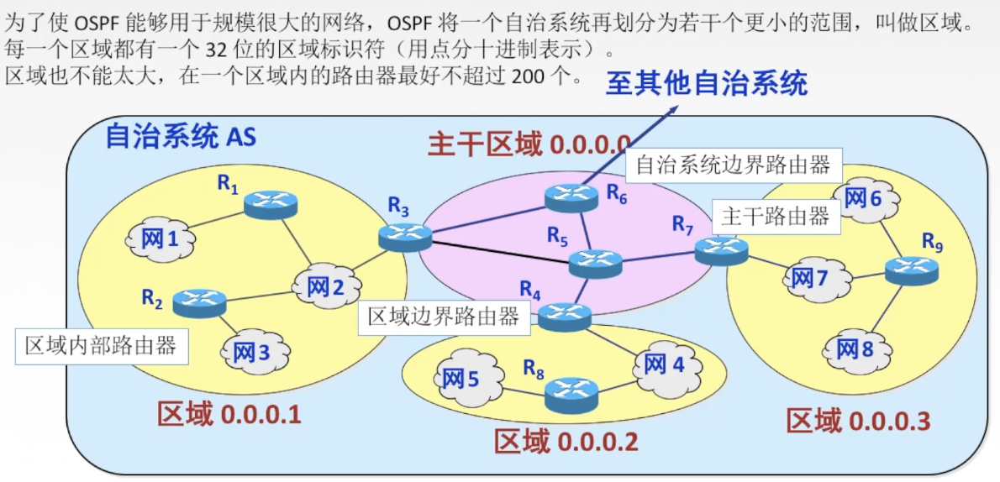
OSPF分组：
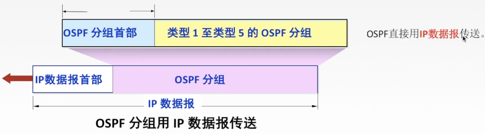
OSPF其他特点：
- 每隔30min，刷新一次数据库中的链路状态。
- 由于每一个路由器的链路状态只涉及到与相邻路由器的连通状态，因而与整个互联网的规模并无直接关系，因此当互联网规模很大时，OSPF协议要比RIP好得多。
- OSPF不存在坏消息传得慢的问题，它的收敛速度更快。
7.3 BGP协议
BGP协议：
- 和谁交换：与其他的邻站BGP发言人交换信息。
- 交换什么：网络可达性信息，即要到达某个网络所要经过的一系列AS。
- 多久交换：发生变化时更新有变化的部分。
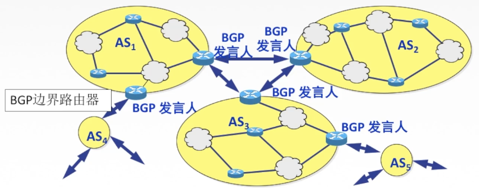
BGP协议交换信息的过程：BGP所交换的网络可达性的信息就是要到达某个网络所要经过的一系列AS。当BGP发言人互相交换了网络可达性的信息后，各BGP发言人就根据所采用的策略从收到的路由信息中找到到达各AS的较好路由。
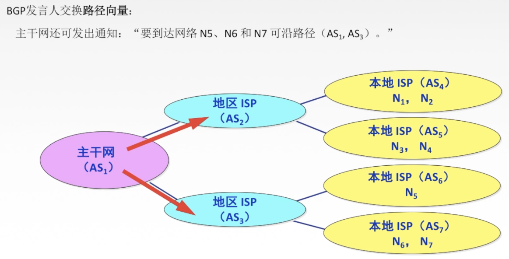
BGP协议的报文格式：
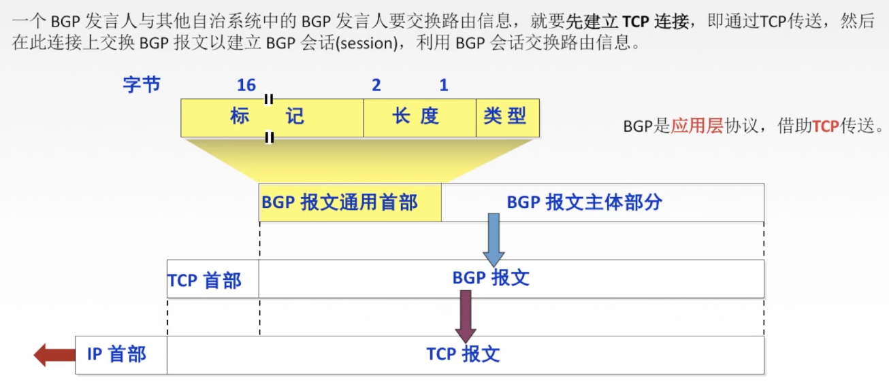
BGP协议的特点：
- BGP支持CIDR，因此BGP的路由表包括目前网络前缀、下一跳路由器，以及到达目的网络要经过的AS序列。
- BGP刚运行时，BGP的邻站交换整个BGP路由表，以后只需要在发生变化时更新有变化的部分，从而节省网络带宽，减少路由器处理开销。
BGP-4的4种报文：
- OPEN报文：用来喝相邻的另一个BGP发言人建立关系，并认证发送方。
- UPDATE报文：通告新路径或撤销原路径。
- KEEPALIVE报文：在无UPDATE时，周期性证实邻站的连通性，也作为OPEN的确认。
- NOTIFICATION报文：报告先前的报文的差错，也用于关闭连接。
三种路由协议比较：
- RIP是一种分布式的基于距离向量的内部网关路由选择协议，通过广播UDP报文来交换路由信息。
- OSPF是一个内部网关协议，交换信息量大，应使报文长度尽量短，所以不适用传输层协议，直接采用IP。
- BGP是一个外部网关协议，在不同AS之间交换路由信息，由于网络环境复杂需要可靠传输，采用TCP。
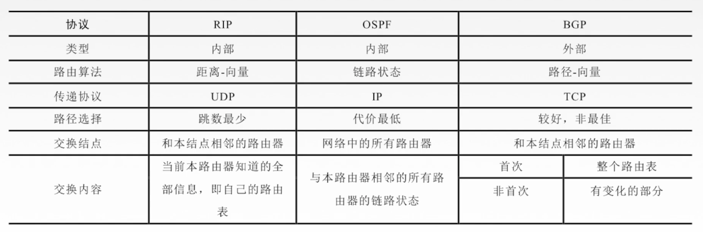
8 IP组播
IP数据报的三种传输方式：
- 单播：用于发送数据报到单个目的地，且每发送一个份单播报文都使用一个单播IP地址，作为目的地址，是点对点传输方式。
- 广播：发送数据报到同一广播域或子网内的所有设备的一种数据传输方式，是点对多点传输方式。
- 组播（多播）：当网络中某些用户需要特定数据时，组播数据发送者仅发送一次数据，借助组播路由协议为组播数据报建立组播发送树，被传递的数据到达距离用户端尽可能近的节点后才开始复制和分发，是点对多点传输方式。
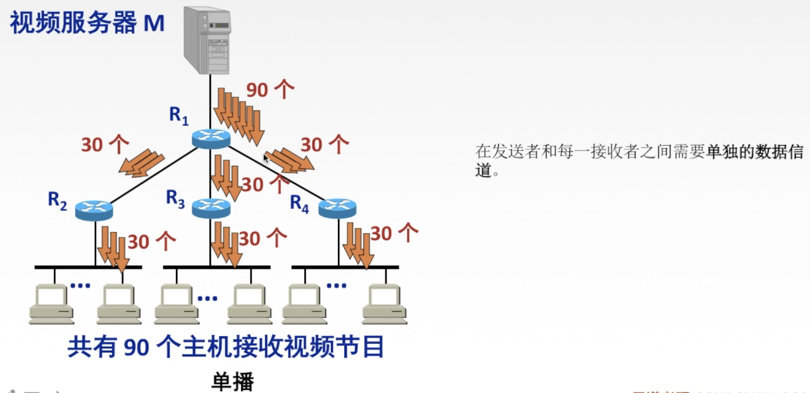
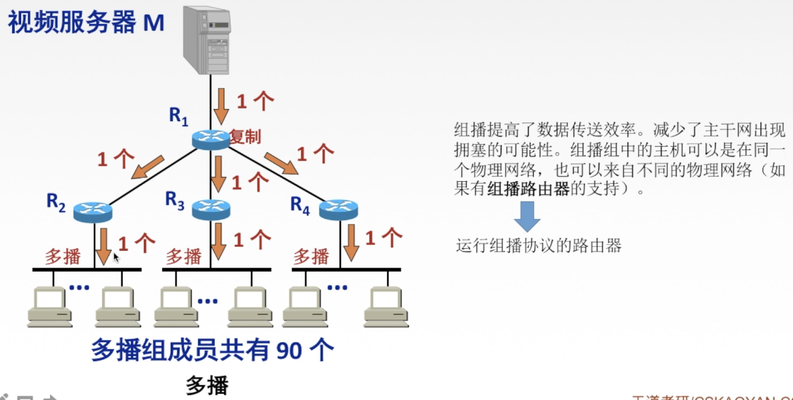
IP组播地址：
- IP组播地址让源设备能够将分组发送给一个组设备。属于多播组的设备将被分配一个组播组IP地址（一群有共同需求主机的相同标识）。
- 组播地址范围224.0.0.0~239.255.255.255（D类地址），一个D类地址表示一个组播组，只能作分组的目的地址，源地址总是单播地址。
- 特点：
- 组播数据报是“尽最大努力交付”，不提供可靠交付，应用于UDP。
- 对组播数据报不产生ICMP差错报文。
- 并非所有D类地址都可以作为组播地址。
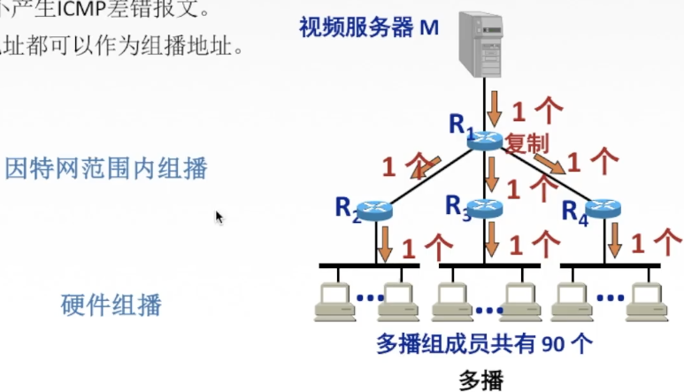
硬件组播：组播IP地址也需要相应的组播MAC地址在本地网络中实际传送帧。组播MAC地址以16进制01-00-5E打头，余下的6个十六进制位是根据IP组播地址的最后23位转换得到。
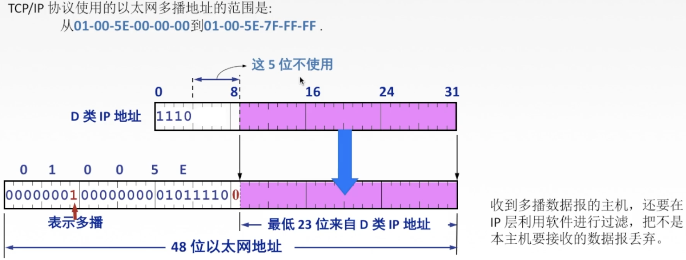
网际组管理协议IGMP：
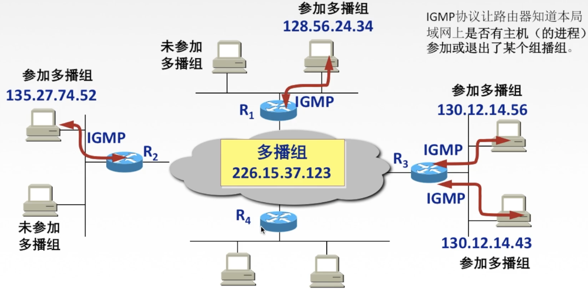
IGMP工作的两个阶段：
- 某主机要加入组播组时，该主机向组播组发送一个IGMP报文，声明自己要成为该组的成员。本地组播路由器收到IGMP报文后，利用组播路由选择协议把这组成员关系发给因特网上的其他组播路由器。
- 本地组播路由器周期性探询本地局域网上的主机，以便知道这些主机是否还是组播组成员。只要有一个主机对某个组响应，那么组播路由器就认为这个组是活跃的；如果经过几次探询后没有一个主机响应，组播路由器就认为本网络上没有此组播组的主机，因此就不把这组的成员关系发给其他组播路由器。
组播路由器知道的成员关系只是所连接局域网中有无组播组的成员。
组播路由选择协议：
- 目的是找出源主机为根结点的组播转发树。
- 构造树结构可以避免形成环。
- 不同的多播组对应于不同的多播转发树；同一个多播组，对不同的源点也会有不同的多播转发树。
- 使用三种算法：
- 基于链路状态的路由选择
- 基于距离-向量的路由选择
- 协议无关的组播（稀疏/密集）
9 移动IP
相关术语：
- 移动IP技术是移动结点（计算机/服务器等）以固定的网络IP地址，实现跨越不同网段的漫游功能，并保证了基于网络IP的网络权限在漫游过程中不发生任何改变。
- 移动结点：具有永久IP地址的移动设备。
- 归属代理（本地代理）：一个移动节点拥有的“居所”称为归属网络，在归属网络中代表移动节点执行移动管理功能的实体就叫归属代理。
- 外部代理（外地代理）：在外部网络中帮助移动节点完成移动管理功能的实体称为外部代理。
- 永久地址（归属地址/主地址）：移动站点在归属网络中的原始地址。
- 转交地址（辅地址）：移动站点在外部网络使用的临时地址。
通信过程：
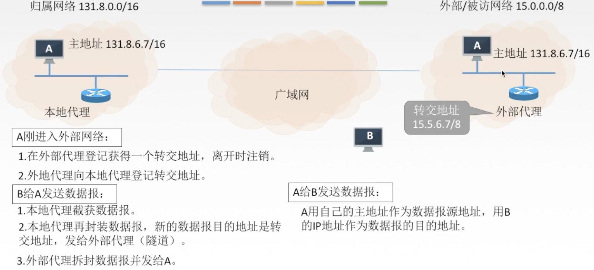
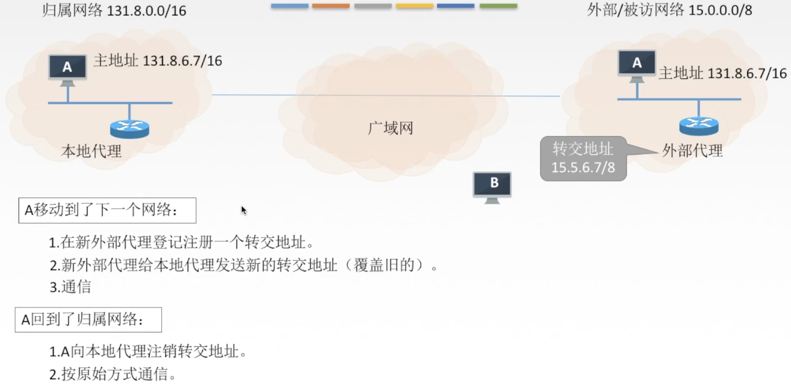
10 网络层设备
路由器：
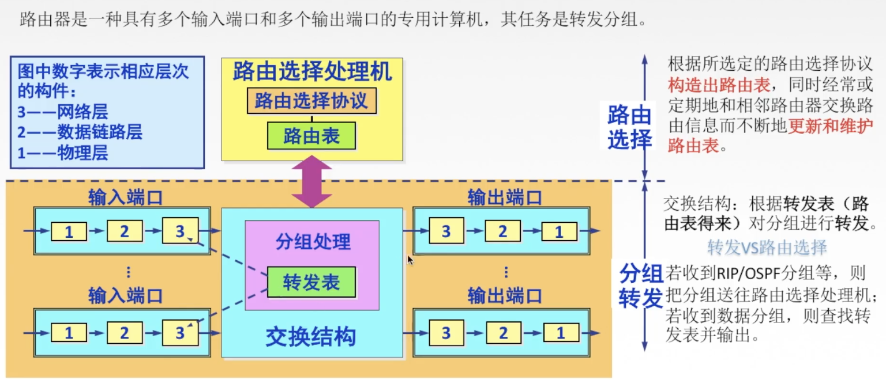
输入端口对线路上收到分组的处理：
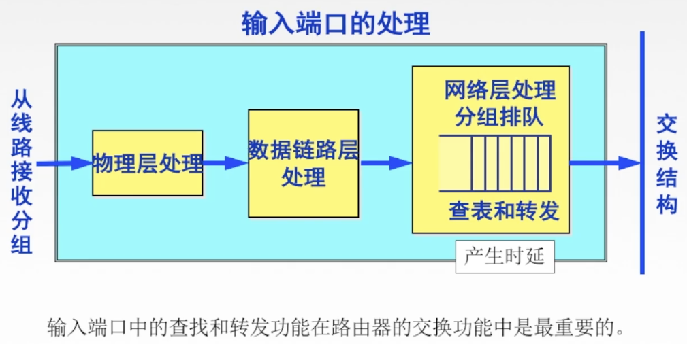
输出端口将交换结构传送来的分组发送到线路：
三层设备的区别：
- 路由器：互联两个不同网络层协议的网段。
- 网桥：互联两个物理层和链路层不同的网段。
- 集线器：不能互联两个物理层不同的网段。
路由表与路由转发：
- 路由表根据路由选择算法得出，主要用途是路由选择，总用软件实现。
- 转发表由路由表得来，可以用软件实现，也可以用特殊硬件实现。转发表必须包含完成转发功能所必需的信息，在转发表的每一行必须包含从要到达的目的网络到输出端口和某些MAC地址信息的映射。
参考资料：
B站 2019 王道考研 计算机网络